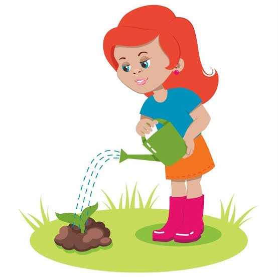
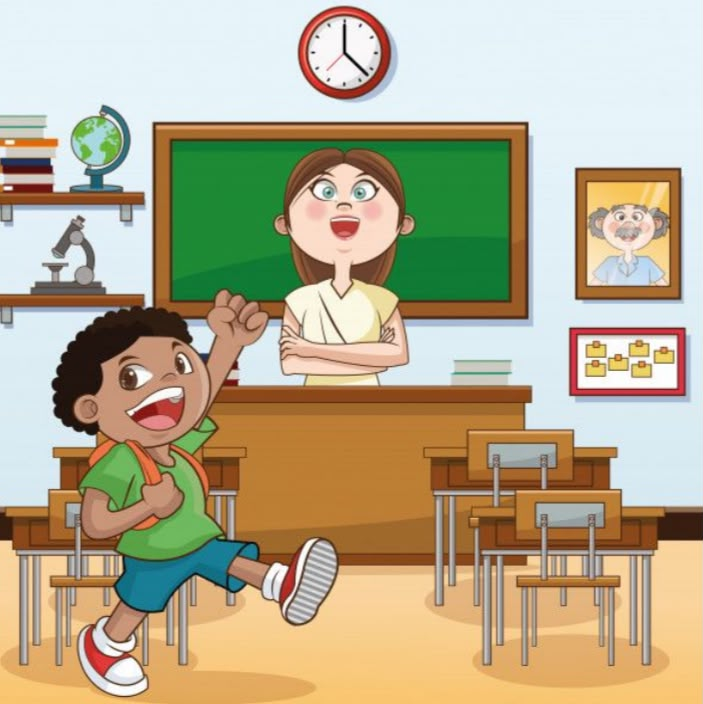

Questão 1 – Interpretação Textual
A Planta de Ana
Ana cuidava de suas plantas todos os dias. Em uma manhã muito quente, percebeu que uma delas estava com as folhas caídas. Ela regou a planta e a colocou em um lugar com menos sol. No dia seguinte, a planta estava bonita e com as folhas verdes novamente.

Questão: Explique, com suas palavras, o que Ana fez para cuidar da planta e por que essa atitude foi importante.
Questão 2 – Oralidade

Questão: Imagine que um colega novo chegou à sua turma. Conte como você o receberia e quais atitudes poderiam ajudá-lo a se sentir acolhido na escola. Organize sua resposta de forma clara e apresente exemplos do cotidiano.